引言
考虑语音识别问题。我们有一个音频片段及其对应转录文本的数据集。但遗憾的是，我们并不知道转录文本中的字符如何与音频对齐。这使得训练语音识别器比最初看起来要困难得多。
由于缺乏这种对齐信息，简单的方法无法使用。我们可以制定一条规则，比如“一个字符对应十个输入”。但人们的语速各不相同，这种规则总是可能被打破。另一种选择是手动将每个字符与音频中的位置对齐。从建模角度来看，这效果很好——我们能知道每个输入时间步的真实标签。然而，对于任何规模合理的数据集来说，这耗时过长，无法接受。
这个问题不仅出现在语音识别中。在许多其他领域也会遇到。例如，从图像或笔迹序列中进行手写识别，以及视频中的动作标注。
联结主义时间分类（Connectionist Temporal Classification，简称 CTC）是一种绕过输入和输出之间未知对齐问题的方法。正如我们将看到的，它特别适合语音识别和手写识别等应用。
更正式地说，我们考虑将输入序列 X = [x_1, x_2, \ldots, x_T]（如音频）映射到对应的输出序列 Y = [y_1, y_2, \ldots, y_U]（如转录文本）。我们希望找到从 X 到 Y 的准确映射。
有一些挑战阻碍我们使用更简单的监督学习算法。具体来说：
CTC 算法克服了这些挑战。对于给定的 X，它提供所有可能 Y 的输出概率分布。我们可以使用这个分布来推断可能的输出，或者评估给定输出的概率。
并非所有计算损失函数和进行推断的方法都是可行的。我们要求 CTC 能够高效地完成这两项任务。
损失函数：对于给定的输入，我们希望训练模型使其赋予正确答案的概率最大化。为此，我们需要高效地计算条件概率 p(Y \mid X).。函数 p(Y \mid X) 还必须是可微分的，以便我们可以使用梯度下降。
推断：自然地，在训练模型之后，我们希望使用它根据 X. 推断可能的 Y。这意味着求解
理想情况下 Y^* 可以被高效找到。使用 CTC 时，我们会接受一个不那么昂贵且近似的最优解。
算法详解
CTC 算法可以为任意给定 X. 计算任意 Y 的概率。计算这个概率的关键在于 CTC 如何看待输入和输出之间的对齐。我们将首先介绍这些对齐，然后展示如何利用它们来计算损失函数并进行推断。
对齐
CTC 算法是无对齐的（alignment-free）——它不需要输入和输出之间的精确对齐。然而，为了得到给定输入下输出的概率，CTC 通过对输入和输出之间所有可能对齐的概率进行求和来实现。我们需要理解这些对齐是什么，才能明白损失函数最终是如何计算的。
为了说明 CTC 对齐的具体形式，首先考虑一种朴素的方法。我们用一个例子来说明。假设输入长度为六，Y = 为 [c, a, t]。一种将 X 和 Y 对齐的方式是为每个输入步骤分配一个输出字符，然后合并重复项。
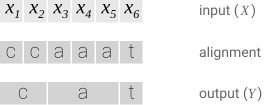
这种方法存在两个问题。
为了解决这些问题，CTC 在允许的输出集合中引入了一个新的标记。这个新标记有时被称为空白标记（blank token）。我们在这里将其记为 \epsilon.。\epsilon 标记不对应任何实际内容，最终会从输出中被移除。
CTC 允许的对齐与输入长度相同。我们允许任何在合并重复并移除 \epsilon 标记后能映射到 Y 的对齐：
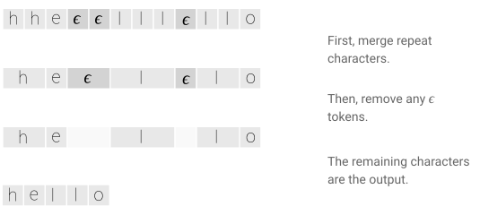
如果 Y 中有两个相同的字符连续出现，那么有效的对齐必须在它们之间有一个 \epsilon。有了这条规则，我们就能区分那些合并后为“hello”的对齐和那些合并后为“helo”的对齐。
让我们回到输出为 [c, a, t]、输入长度为六的情况。下面是一些有效和无效对齐的例子。
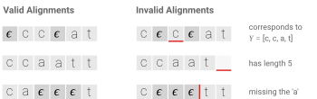
CTC 对齐有一些值得注意的特性。首先，X 和 Y 之间的允许对齐是单调的。如果我们前进到下一个输入，对应的输出可以保持不变或前进到下一个。其次，X 到 Y 的对齐是多对一的。一个或多个输入元素可以对齐到一个输出元素，但反之不行。这蕴含着第三个特性：Y 的长度不能大于 X. 的长度。
损失函数
CTC 对齐为我们提供了一种从每个时间步的概率自然过渡到输出序列概率的方法。
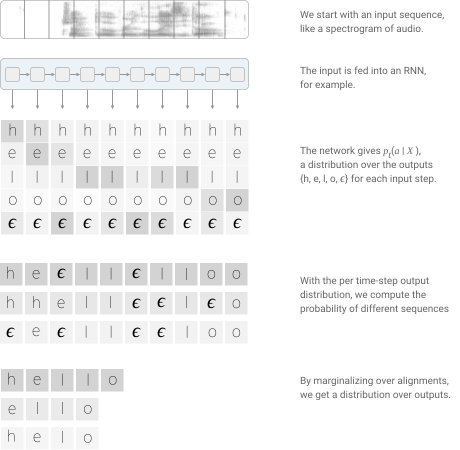
精确地说，单个 (X, Y) 对的 CTC 目标函数为：
[交互图：CTC 条件概率——查看原文：https://distill.pub/2017/ctc]
使用 CTC 训练的模型通常采用循环神经网络（RNN）来估计每个时间步的概率 p_t(a_t \mid X).。RNN 通常表现良好，因为它能考虑输入的上下文，但我们也可以使用任何能根据固定大小输入片段产生输出类别分布的学习算法。
如果不小心，CTC 损失的计算可能非常昂贵。我们可以尝试直接的方法，为每个对齐计算分数并一路累加。问题是可能存在海量的对齐。 [1] 对于大多数问题来说，这会太慢。
幸运的是，我们可以使用动态规划算法更快地计算损失。关键洞见是：如果两个对齐在同一时间步到达了相同的输出，那么我们可以将它们合并。
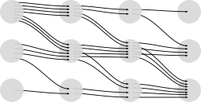
由于我们可以在 Y 中的任意标记前后放置 \epsilon，用一个包含空白的序列来描述算法会更容易。我们将使用序列
它是在 Y 的开头、结尾以及每个字符之间都插入 \epsilon 后得到的。
令 \alpha 表示在给定节点处合并后的对齐得分。更准确地说，\alpha_{s, t} 是 Z_{1:s} 这个子序列在经过 t 个输入步骤后的 CTC 得分。正如我们将看到的，我们将从最后一个时间步的 \alpha 来计算最终的 CTC 得分 P(Y \mid X)。只要我们知道前一时间步 \alpha 的值，就可以计算 \alpha_{s, t}.。这里有两种情况。
情况 1：
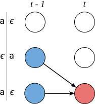
在这种情况下，我们不能跳过 z_{s-1}，即 Z. 中的前一个标记。首先是因为前一个标记可能是 Y 的元素，而我们不能跳过 Y. 的元素。由于 Z 中的每个 Y 元素后面都跟着一个 \epsilon，当 z_{s} = \epsilon. 时我们可以识别这种情况。其次是因为在 Y. 的重复字符之间必须有一个 \epsilon。当 z_s = z_{s-2}. 时我们可以识别这种情况。
为了确保我们没有跳过 z_{s-1}，我们可以处于前一时间步的位置，或者已经在更早的时间步经过它。因此，有两个可以转移的位置。
[交互图：在 t-1 个输入步骤后两个有效子序列的 CTC 概率——查看原文：https://distill.pub/2017/ctc]
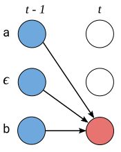
情况 2：
在第二种情况下，我们可以跳过 Z. 中的前一个标记。当 z_{s-1} 是唯一字符之间的 \epsilon 时，我们就处于这种情况。因此，我们在前一步有三个可能的位置来源。
[交互图：在 t-1 个输入步骤后三个有效子序列的 CTC 概率——查看原文：https://distill.pub/2017/ctc]
下面是动态规划算法计算过程的一个示例。每个有效对齐都在这个图中有一条路径。
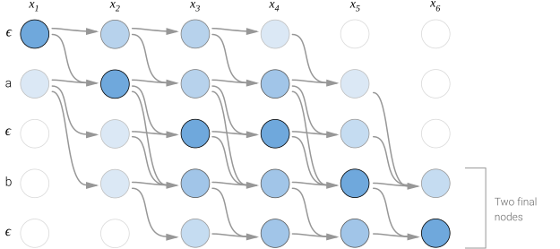
因为序列开头和结尾的 \epsilon 是可选的，所以有两个有效的起始节点和两个有效的最终节点。完整的概率是两个最终节点的和。
现在我们能够高效计算损失函数，接下来是计算梯度并训练模型。CTC 损失函数相对于每个时间步的输出概率是可微的，因为它只是这些概率的求和与乘积。因此，我们可以解析地计算损失函数相对于（未归一化的）输出概率的梯度，然后照常运行反向传播。
对于训练集 \mathcal{D}，模型的参数会被调整以最小化负对数似然
而不是直接最大化似然。
推断
训练模型后，我们希望用它为给定输入找到一个可能的输出。更准确地说，我们需要求解：
一种启发式方法是在每个时间步选择概率最高的输出。这给了我们概率最高的对齐：
然后我们可以合并重复并移除 \epsilon 标记，得到 Y.
对于许多应用来说，这种启发式方法效果良好，特别是当大部分概率质量都集中在一个对齐上时。然而，这种方法有时会错过那些容易找到且概率高得多的输出。问题在于，它没有考虑到单个输出可能对应多个对齐。
这里有一个例子。假设对齐 [a, a, \epsilon] 和 [a, a, a] 各自的概率都低于 [b, b, b]。但它们的概率之和实际上大于 [b, b, b]。朴素的启发式方法会错误地将 Y = [b] 作为最可能的假设。它本应选择 Y = [a]。为了解决这个问题，算法需要考虑到 [a, a, a] 和 [a, a, \epsilon] 会坍缩为相同输出的事实。
我们可以使用改进的集束搜索（beam search）来解决这个问题。在计算资源有限的情况下，改进的集束搜索不一定能找到概率最高的 Y.。但它至少有一个很好的特性，即我们可以用更多的计算（更大的 beam size）换取渐近更好的解。
常规的集束搜索在每个输入步骤计算一组新的假设。这组新假设是通过将前一组中的每个假设用所有可能的输出字符扩展，然后保留得分最高的候选者而生成的。
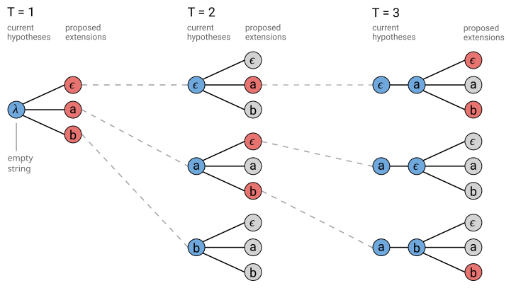
我们可以修改普通集束搜索以处理多个对齐映射到同一输出的情况。在这种情况下，我们不在 beam 中存储对齐列表，而是存储合并重复并移除 \epsilon 字符后的输出前缀。在搜索的每一步，我们根据所有映射到它的对齐来累积给定前缀的分数。
[交互图：具有输出字母表 \{\epsilon, a, b\} 和 beam size 为三的 CTC 集束搜索算法——查看原文：https://distill.pub/2017/ctc]
当字符是重复时，提出的扩展可能会映射到两个输出前缀。这在上面图中的 T=3 处显示，其中 ‘a’ 被提出作为前缀 [a] 的扩展。对于这个提议的扩展，[a] 和 [a, a] 都是有效的输出。
当我们将 [a] 扩展为 [a,a] 时，我们只想包含前一个得分中那些以 \epsilon. 结束的对齐部分。请记住，重复字符之间必须有 \epsilon。类似地，当我们不扩展前缀而生成 [a] 时，我们应该只包含前一个得分中那些不以 \epsilon. 结束的对齐部分。
因此，我们必须为 beam 中的每个前缀跟踪两个概率。以 \epsilon 结束的所有对齐的概率，以及不以 \epsilon. 结束的所有对齐的概率。当我们在每一步修剪 beam 之前对假设进行排序时，我们将使用它们的综合得分。
[交互图——查看原文：https://distill.pub/2017/ctc]
这个算法的实现不需要太多代码，但内容密集且容易出错。可以查看这个 gist 中的 Python 示例实现。
在某些问题中，例如语音识别，加入针对输出的语言模型可以显著提高准确率。我们可以将语言模型作为推断问题中的一个因子来包含。
[交互图：CTC 条件概率——查看原文：https://distill.pub/2017/ctc]
函数 L(Y) 以语言模型标记为单位计算 Y 的长度，并作为词插入奖励。在基于词的语言模型中，L(Y) 计算 Y. 中的词数。如果我们使用基于字符的语言模型，那么 L(Y) 计算 Y. 中的字符数。语言模型得分仅在通过字符（或词）扩展前缀时才包含，而不是在算法的每一步都包含。这会导致搜索偏好较短的前缀（按 L(Y) 衡量），因为它们包含的语言模型更新较少。词插入奖励有助于缓解这个问题。参数 \alpha 和 \beta 通常通过交叉验证来设置。
语言模型得分和词插入项可以包含在集束搜索中。每当我们提议通过一个字符来扩展前缀时，我们可以包含给定当前前缀的下一个字符的语言模型得分。
CTC 的特性
目前我们提到了一些 CTC 的重要特性。在这里我们将更深入地讨论这些特性是什么，以及它们带来的权衡。
条件独立性
CTC 最常被提及的缺点之一是它所做的条件独立性假设。
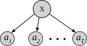
该模型假设给定输入时，每个输出都与其他输出条件独立。对于许多序列到序列问题来说，这是一个糟糕的假设。
假设我们有一个某人说“triple A”的音频片段。[[Chan2016las]] 另一个有效的转录可能是“AAA”。如果预测转录的第一个字母是‘A’，那么下一个字母应该是‘A’的概率很高，而‘r’的概率很低。条件独立性假设不允许这种情况发生。
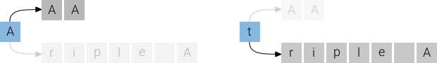
事实上，使用 CTC 的语音识别器对输出语言模型的学习效果远不如那些条件相关的模型。[[Battenberg2017]] 不过，可以加入一个独立的语言模型，通常能显著提升准确率。
CTC 所做的条件独立性假设并不总是坏事。将输出交互的强烈信念 baked into 模型会使模型对新领域或变化领域的适应性降低。例如，我们可能想用在朋友间电话对话上训练的语音识别器来转录客服电话。即使声学模型相似，这两个领域的语言也可能大不相同。使用 CTC 声学模型，我们可以在改变领域时轻松更换新的语言模型。
对齐特性
CTC 算法是无对齐的。目标函数对所有对齐进行边缘化。虽然 CTC 对 X 和 Y 之间的对齐形式做出了强烈假设，但模型对概率如何在这些对齐中分配是 agnostic 的。在某些问题中，CTC 最终会将大部分概率分配给单个对齐。然而，这并不能保证。 [2]
如前所述，CTC 只允许单调对齐。在语音识别等问题中，这可能是一个合理的假设。对于机器翻译等其他问题，其中目标句子中的未来词可能与源句子的较早部分对齐，这个假设就成了致命缺陷。
CTC 对齐的另一个重要特性是它们是多对一的。多个输入最多只能对齐到一个输出。在某些情况下，这可能并不理想。我们可能希望强制 X 和 Y. 的元素之间严格一一对应。或者，我们可能希望允许多个输出元素对齐到一个输入元素。例如，字符“th”可能对齐到音频的单个输入步骤。基于字符的 CTC 模型不允许这种情况。
多对一的特性意味着输出的时间步数不能多于输入。 [3] 对于语音和手写识别来说，这通常不是问题，因为输入比输出长得多。然而，对于其他 Y 通常比 X 更长的问题，CTC 就无法工作了。
CTC 的背景
在本节中，我们将讨论 CTC 与其他常用序列建模算法的关系。
HMM
乍一看，隐马尔可夫模型（Hidden Markov Model，简称 HMM）与 CTC 似乎大不相同。但实际上，这两种算法非常相似。理解它们之间的关系将帮助我们理解 CTC 相对于 HMM 序列模型的优势，并为如何针对不同用例修改 CTC 提供洞见。
我们使用和之前一样的符号，X 是输入序列，Y 是输出序列，长度分别为 T 和 U。我们感兴趣的是学习 p(Y \mid X).。简化问题的一种方法是应用贝叶斯定理：
p(Y) 项可以是任意语言模型，因此我们重点关注 p(X \mid Y).。和之前一样，我们令 \mathcal{A} 为 X 和 Y. 之间允许的对齐集合。\mathcal{A} 的成员长度为 T.。我们暂且不具体定义 \mathcal{A}，稍后再讨论。我们可以对对齐进行边缘化，得到
为简化符号，我们去掉对 Y 的条件，它会出现在每个 p(\cdot). 中。基于两个假设，我们可以写出标准的 HMM。
[交互图：输入的概率——查看原文：https://distill.pub/2017/ctc]
第一个假设是通常的马尔可夫性质。状态 a_t 在给定前一状态 a_{t-1}. 的条件下，与所有历史状态条件独立。第二个是观测 x_t 在给定当前状态 a_t. 的条件下，与其他所有变量条件独立。
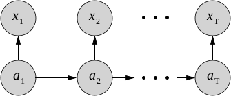
现在我们可以通过几个步骤将 HMM 转化为 CTC，并看到两个模型如何关联。首先，假设转移概率 p(a_t \mid a_{t-1}) 是均匀的。这给出
这个方程与 CTC 损失函数只有两个不同之处。首先是我们学习的是 X 给定 Y 的模型，而不是 Y 给定 X. 的模型。其次是集合 \mathcal{A} 是如何产生的。我们依次讨论这两点。
HMM 可以与估计 p(a \mid x). 的判别模型一起使用。为此，我们应用贝叶斯定理并将模型重写为
如果我们假设状态 a 上的先验是均匀的，并对整个 X 而不是一次一个元素进行条件化，我们得到
上述方程本质上就是 CTC 损失函数，前提是集合 \mathcal{A} 是相同的。事实上，HMM 框架并没有指定 \mathcal{A} 应该由什么组成。这部分模型可以根据具体问题来设计。在许多情况下，模型不以 Y 为条件，而集合 \mathcal{A} 包含输出字母表中所有可能的长度为 T 的序列。在这种情况下，HMM 可以画成一个遍历的状态转移图，其中每个状态都连接到其他所有状态。下图展示了这个模型，其中字母表或唯一隐藏状态的集合为 \{a, b, c\}.
在我们的例子中，模型允许的转移与 Y. 密切相关。我们希望 HMM 能反映这一点。一种可能的模型是简单的线性状态转移图。下图展示了使用与之前相同字母表和 Y = [a, b] 的情况。另一种常用的模型是 Bakis 或左到右 HMM。在这个模型中，任何从左到右的转移都是允许的。
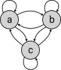
在 CTC 中，我们用 \epsilon 扩展字母表，而 HMM 模型允许左到右转移的一个子集。CTC HMM 有两个起始状态和两个接受状态。
一个可能引起混淆的地方是，对于任何唯一的 Y.，HMM 模型都不一样。这在语音识别等应用中实际上是标准的。状态图会根据输出 Y. 变化。但是，估计观测和转移概率的函数是共享的。
让我们讨论 CTC 如何改进原始的 HMM 模型。首先，我们可以将 CTC 状态图视为一个特殊的 HMM，它对许多我们感兴趣的问题都适用。将空白作为一个隐藏状态加入 HMM 允许我们使用 Y 的字母表作为其他隐藏状态。这个模型还提供了一组允许的对齐，对于某些问题可能是一个很好的先验。
也许最重要的是，CTC 是判别式的。它直接对 p(Y \mid X) 建模，这一想法在过去通过其他对 HMM 的判别式改进中已被证明很重要。[[Woodland2002]] 判别式训练让我们能够将强大的学习算法如 RNN 直接应用于我们关心的问题。
编码器-解码器模型
编码器-解码器可能是使用神经网络进行序列建模最常用的框架。这些模型有一个编码器和一个解码器。编码器将输入序列 X 映射到一个隐藏表示。解码器消费这个隐藏表示并产生输出的分布。我们可以将其写为
\textsf{encode}(\cdot) 和 \textsf{decode}(\cdot) 函数通常是 RNN。解码器可以选择性地配备注意力机制。隐藏状态序列 H 与输入具有相同的时间步数，即 T.。有时编码器会对输入进行下采样。如果编码器以因子 s 对输入进行下采样，那么 H 将有 T/s 个时间步。
我们可以在编码器-解码器框架中解释 CTC。这有助于理解适用于 CTC 的编码器-解码器模型的发展，并为这些模型的特性建立共同语言。
编码器：CTC 模型的编码器可以是我们在常用编码器-解码器模型中找到的几乎任何编码器。例如，编码器可以是多层双向 RNN 或卷积网络。CTC 编码器有一个不适用于其他编码器的约束。输入长度不能被下采样到 T/s 小于输出长度的情况。
解码器：我们可以将 CTC 模型的解码器视为一个简单的线性变换后接 softmax 归一化。这一层应该将编码器输出的所有 T 步 H 投影到输出字母表的维度上。
我们之前提到 CTC 对输出序列中的字符做出了条件独立性假设。这是其他编码器-解码器模型相对于 CTC 的一个重大优势——它们可以对输出之间的依赖关系建模。但在实践中，CTC 在语音识别等任务中仍然更常用，因为我们可以通过加入外部语言模型部分克服条件独立性假设。
实用者指南
到目前为止，我们主要建立了对 CTC 的概念理解。在这里我们将介绍一些针对实践者的实现技巧。
软件：即使对 CTC 有扎实的理解，实现仍然很困难。该算法有几个边界情况，一个快速的实现应该用低级编程语言编写。开源软件工具大大降低了入门的难度：
数值稳定性：朴素地计算 CTC 损失在数值上是不稳定的。避免这个问题的一种方法是在每个时间步对 \alpha 进行归一化。原始论文对此有更多细节，包括对梯度的调整。[[Graves2006]] 在实践中，这对于中等长度的序列效果足够好，但对于长序列仍可能下溢。一个更好的解决方案是在对数空间中使用 log-sum-exp 技巧来计算损失函数。 [4] 推断也应该在对数空间中使用 log-sum-exp 技巧进行。
集束搜索：在实现和使用 CTC 集束搜索时，有几个有用的技巧值得了解。
集束搜索的正确性可以按以下方式测试。
使用集束搜索解码器时的一个常见问题是应该使用多大的 beam size。这是在准确率和运行时间之间的权衡。我们可以检查 beam size 是否在一个合适的范围。首先计算推断输出 c_i. 的 CTC 得分。然后计算真实输出 c_g. 的 CTC 得分。如果两个输出不同，我们应该有 c_g \lt c_i.。如果 c_i << c_g，则真实输出在模型下的概率实际上更高，而集束搜索未能找到它。在这种情况下，可能需要大幅增加 beam size。